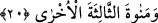

20. Ve üçüncüleri olan ötekini, Menât’ı.
Menât ise Hüzeyl ve Hüzâa kabilelerine âid bir kaya parçası idi. Buna Menât adı
verilmesinin nedeni kurbanların kanlarının onun önüne akıtıldığındandır. Minâ kelimesi
de bu köktendir.
İnsânu’l-uyûn’da: “Menât, Evs ve Hazrec’e âid bir put idi. Rasûlullah (s.a.) Saîd b.
Zeyd el-Eşhalî (r.a.)’yi Menât’ın bulunduğu yeri yıkmak üzere yirmi atlının başında
gönderdi. Onlar bu puta vardıkları zaman oranın bekçisi, Sa’d (r.a.)’ya: “Ne
istiyorsunuz?” deyince Sa’d; “Menât’ı yıkmak için” diye karşılık verdi. Bunun üzerine
bekçi: “Sen ve yanındakiler mi yıkacakmış?!” diye alay edince Sa’d (r.a.) bu puta doğru
yöneldi. Tam o sırada çıplak, esmer tenli, başı toz-duman içinde bir kadın göğsüne
vurup lânetler okuyarak karşısına çıkageldi. Bekçi o kadına: “Böyle âsîlere karşı Menât
putu senin arkandadır” diye cesaret verdi ama Sa’d (r.a.) kadına bir darbe vurup
öldürdü ve putun mahallini de yok etti” şeklinde beyân edilmiştir.
Burada Menât kelimesinin “diğer üçüncüsü” olarak tavsîf edilmesi, “o iki kere gördü
ise siz üç defa gördünüz değil mi?” makamında bir alay ve küçümsemeyi vurgulamak
içindir. “Uhrâ = öteki” da menâtı zem için getirilmiş bir sıfattır. Bu sıfat, menâtın
değersizlğini hakâretvârî bir tarzda dile getirmeye ma’tûf olarak getirilmiştir. Çünkü
“uhrâ” kelimesi, “sonrakiler öncekiler için dediler ki” (Â’râf, 7/38) yâni “zayıflar
reislerine dedi” mânâsındaki ifâdede olduğu gibi zayıflar (güçsüzler) için
kullanılmaktadır.
İbn Şeyh de “uhrâ” kelimesinin her ne kadar “âhar”ın müennesi olmakla birlikte
aslında “teahhur = gecikme”den ism-i tafdil olarak bir şeyin mevsûf ile birlikteliğindeki
farklılığı olarak tanımlamakta ve bu örfî mânânın bu âyette kullanılamayacağını beyân
ederek: “Menâtın üçüncü menât olmasında bir müşâreket bulunmadığı için bundan
sakınılma gayesiyle “uhrâ” diye tavsîf olunmuş ve tevcîh bu şekilde yapılmıştır”
diyerek istidlâlde bulunmuştur.
Lât ve Uzzâ’nın müşriklerin indinde evveliyyet ve tefaddülünün bulunması sebebiyle
Menât’ın derece olarak onlardan sonra gelmiş olması tecvîz edilmiştir. Yâni Uzzâ’nın
bir ağaç olması ve bitkilerin de kaya ve cansız madde olan Menât’tan üstün olması
evvelliyyet sağlar. Bildirildiğine göre müşrikler putlarına esma-i hüsnâdan birini
vermeyi murad etmiş ve onlardan bir tanesine Allah ismini koymak istediklerinde
dilleri sürçüp el-Lât, bir diğerini el-Azîz ismiyle tesmiye etmek istediklerinde yine
dilleri sürçüp Uzzâ ve başka bir puta da el-Mennân diyecekleri yerde sürç-i lisâna
uğrayıp Menât adını vermişlerdir.
Râğıb, Lât kelimesinin aslının “el-Lâh” olduğunu (he) harfi yerine müenneslik tâ’sı
getirilmesiyle Lât’a dönüştüğünü belirtmiştir. Râğıb’a göre müşrikler Lât putuna,
Allah’a yakınlaştıracağı iddiâsıyla bu ismi vermişlerdir.
Süheylî de bu konuda şöyle der: “Bu Lât ismi aslında bir adama âiddir. Bu kimse